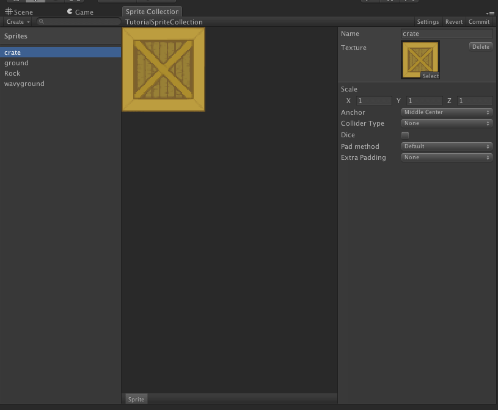
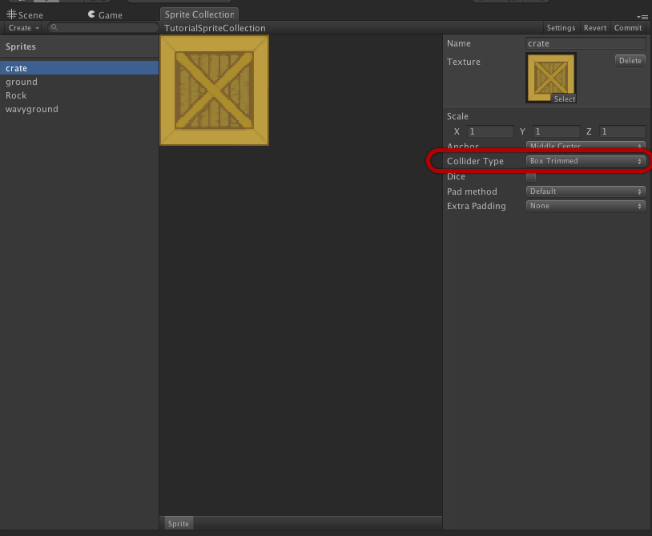
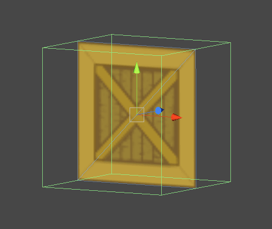

Documentation
Script Reference
Forum
Documentation
Script Reference
Forum
Select your sprite collection and click "Open Editor...".
You can set up various properties, like anchor points, dicing and custom padding algorithms in the sprite collection editor. You can multi select in the sprite list and perform changes on multiple sprites too.

Change collider type to box trimmed. This will create a box trimmed to the visible part of your texture. If you wish to have more control over the positioning of the box, select box custom instead, and you will be able to tweak your box collider.

Click commit.
It is important to click Commit every time you make a change or a set of changes - that is when the changes are actually saved and the atlases and vertex data rebuilt.
You can now close the window. Your sprite in the scene should now have a box collider attached to it. Any instances of this sprite will have the box collider attached to it. This includes instances you have already created, and instances you create in the future.
